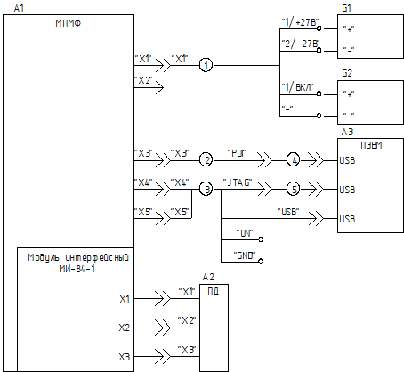

Инструкция по настройке и проверке модуля ПМФ-84-1 НКШР.467444.103
Документация
- НКШР.467444.103 Э3
- НКШР.467444.103 СБ
- НКШР.467846.029 ТУ
- НКШР.468928.082 РЭ
Оборудование
- Мультиметр цифровой
- Источник питания
- Источник питания
- Стенд функционального контроля ПМФ-6
- Панель дисплейная ПД-84-1
- Кабель питания ПМФ
- Кабель ПМФ32-X3-PDI
- Кабель ПМФ60-X4X5
- Кабель X3-ПМФ3.2
- Устройство USB-Blaster
- Внутрисхемный отладчик-программатор ATJTAGICE3
Программное обеспечение
- Quartus II Programmer версии 13.1 или выше
- Atmel Studio версии 6.2 или выше
- программное обеспечение эмуляции переферийных устройств 57504223.00830-01 (ЭПУ) из состава программного
обеспечения СФК ПМФ-6 57504223.00815-01
Проверка
Проверка технологических каналов
Перед проведением проверки установить на источнике питания G1 напряжение (27,0 ± 0,2) В, а на источнике
питания G2 - напряжение (2,1 ± 0,2) В.
Собрать рабочее место проверки МПМФ в соответствии с рисунком 5.
Включить источник питания G1. Убедиться в том, что свечение светодиодного индикатора МПМФ (светодиод VD39 из
состава модуля интерфейсного МИ-84-1 НКШР.467444.104) отсутствует.
Включить источник питания G2. Убедиться в том, что светодиодный индикатор МПМФ светится.
На ПЭВМ А3 запустить программу Quartus II Programmer и нажать в ней кнопку «Auto Detect».
Проверка связи с ПЛИС считается успешной, если появилось окно с выбором микросхемы (в соответствии с
рисунком 1).
Мультиметром проверить напряжение между клеммами «ON» и «GND» кабеля 2. Значение напряжения должно быть
(5,0 ± 0,5) В.
На источнике питания G2 установить напряжение (1,3 ± 0,2) В. Убедиться в том, что свечение светодиодного
индикатора МПМФ отсутствует.
Мультиметром проверить напряжение между клеммами «ON» и «GND» кабеля 2. Значение напряжения должно быть не более
0,5 В.
Рисунок 1 - Успешное завершение установки связи с ПЛИС
Собрать рабочее место проверок МПМФ в соответствии с рисунком 6.
Запустить ПО Atmel Studio.
В меню выбрать пункт Tools → Device Programming.
В появившемся окне (в соответствии с рисунком 2) в группе «Tool – Device –
Interface» для Tool выбрать значение «JTAGICE3», для Device выбрать значение «ATxmega64A3U», для Interface выбрать
значение «PDI».
Рисунок 2 - Окно «Device Programming»
Нажать программную кнопку «Apply».
Установить тактовую частоту интерфейса PDI в поле «PDI Clock» (1,0 ± 0,1) МГц и нажать программную кнопку
«Set» (в соответствии с рисунком 3).
Рисунок 3 - Установка тактовой частоты интерфейса PDI
В группе «Device Signature – Target Voltage» рядом с полем «Device Signature» нажать программную кнопку «Read».
Убедиться, что в нижней части окна появилось сообщение «Reading Device .. OK», в поле «Device Signature» появилось
значение 0x1E9642, в поле «Target Voltage» значение не ниже 3,0 В (в соответствии с рисунком
4).
Рисунок 4 - Пример успешного чтения сигнатуры
Проведение функциональных проверок
Собрать рабочее место проверок МПМФ в соответствии с рисунком 6.
Порядок подготовки рабочего места проверок МПМФ описан в подразделе 3.2 НКШР.467846.029 ТУ.
Провести проверки, описанные в пунктах 3.3.1, 3.3.4 — 3.3.7 НКШР.467846.029 ТУ. При проверке, описанной в пункте
3.3.1 НКШР.467846.029 ТУ, проводить проверку только для разрешения 1024х768.
Схема рабочего места проверки технологических каналов
Рисунок 5 - Схема рабочего места проверки технологических
каналов
A1 - МПМФ;
A2 - Панель дисплейная ПД-84-1 НКШР.467846.031;
A3 - ПЭВМ;
G1, G2 - Источник питания Б5-71/1мм;
1 - Кабель питания ПМФ НКШР.685631.157;
2 - Кабель ПМФ32-X3-PDI НКШР.685623.086;
3 - Кабель ПМФ60-X4X5 НКШР.685665.346;
4 - Внутрисхемный отладчик-программатор ATJTAGICE3;
5 - Устройство USB-Blaster.
Рисунок 6 - Схема рабочего места функциональных
проверок МПМФ
А1 - ПЭВМ;
А2 - Модуль CP-CAN-PCIEx1 НКШР.467144.055;
А3 - Модуль GE-QP-PCIEx4 НКШР.468359.007;
А4 - Модуль ПИ-RS-PCIEx1 НКШР.468152.021;
А5 - Устройство сопряжения VPXx1 НКШР.468345.034;
А6 - МПМФ;
А7 - Панель дисплейная ПД-84-1 НКШР.467846.031;
А8 - Устройство формирования дискретных сигналов НКШР.468179.001;
А9 - Модуль GP-CL-PCIEx4 НКШР.468449.003;
G1 - Источник питания PSH-73610;
1 - Кабель синхронизации НКШР.685622.046;
2 - Кабель RS-PSP НКШР.685621.069;
3 - Кабель CANx4-УС НКШР.685665.213;
4, 5 - Кабель SC03-8P8C3-G;
6 - Кабель МПИ-RS-УC НКШР.685667.031;
7 - Кабель питания PSH-УС НКШР.685631.120;
8 - Кабель X3-ПМФ3.2 НКШР.685663.305;
9 - Кабель Х1-ПМФ6.0-СФК НКШР.685665.294;
10 - Кабель Х2-ПМФ6.0-СФК НКШР.685665.295;
11 - Кабель Х3-ПМФ6.0-СФК НКШР.685665.296;
12 - Кабель Х4-ПМФ6.0-СФК НКШР.685665.297;
13-18 - Кабель SMB-SMB НКШР.685661.118;
19 - Кабель SC03-8P8C3-G.